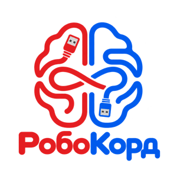
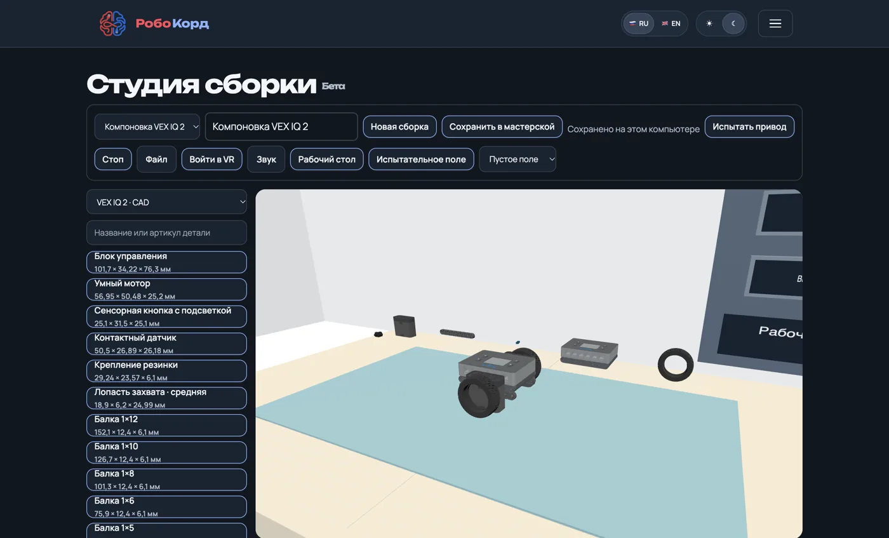

Понять задачу
Выбрать условие и поле или подготовить собственную карту.

RoboCord Открыть платформу ↗Проект для ярмарки «Точка вдохновения»
От алгоритма — к действию робота.
Образовательная платформа, где ученик получает задачу, составляет программу, наблюдает движение и сам находит причину ошибки.
В робототехнике программа, датчики, карта и реальное движение связаны между собой. Когда робот поворачивает не туда, по одному коду трудно понять, что именно пошло не так.
Физических наборов в группе может быть меньше, чем учеников. Виртуальная проверка даёт возможность повторить опыт до выхода на поле. Её учебную пользу ещё предстоит измерить на занятиях.
Выбрать условие и поле или подготовить собственную карту.
Использовать блоки или поддерживаемые конструкции JavaScript, C++ и Arduino.
Запустить робота в симуляции, наблюдать показания датчиков и момент ошибки.
Изменить алгоритм, повторить опыт и сохранить карту с программой в формате .robocord.
Симуляция выполняется на устройстве. Подключение физического робота зависит от конкретного адаптера и требует отдельной проверки на оборудовании.

ДЕМОНСТРАЦИЯ ПРОТОТИПА
В прототипе есть задания, блочный редактор, текстовые режимы, поле, симулятор, курсы и кабинет преподавателя. CAD/VR-мастерская демонстрирует направление развития сборки; точность геометрии набора и управление в VR требуют испытаний.
Открыть действующую платформу ↗Идея ролика — показать путь ученика через образ робота: от первого движения и ошибки к пониманию, почему команда сработала именно так.
Анимация выбрана как понятный язык для школьников. Она помогает заинтересовать зрителя, а технические возможности платформы подтверждаются отдельно на работающем прототипе.
Форма: короткий анимационный ролик. Для подготовки использованы цифровая анимация и элементы фирменного стиля RoboCord.
Редакторы, задачи, симуляция, карта, аккаунты и учебные материалы. Проверены технические сценарии.
12 технических сценариев и два учебных занятия не менее чем с десятью учениками. Целевой показатель — 80% самостоятельных завершений; это пока цель, не результат.
Испытания на конкретных роботах, развитие адаптеров, датчиков, 3D-сборки и видеоинструкций.
Веб-клиент, локальный симулятор, серверная инфраструктура Cloudflare, учебные поля, тестовые наборы, графические и видеоматериалы проекта. Работа на физическом оборудовании проверяется отдельно.
Автор разрабатывает программный прототип, учебный сценарий и материалы демонстрации. Данные наставника будут внесены в конкурсную заявку и на страницу после подтверждения его участия.
Курск · www.robocord.site ↗